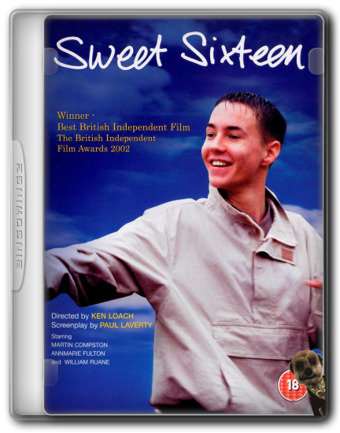

FYC://Sweet Sixteen [2002] 480p DVDRip x264 AC3 ENG SUB (UKBandit)
Descption:

Sweet Sixteen [2002] 480p DVDRip x264 AC3 ENG SUB (UKBandit)
Genres: Crime | Drama | (102mins)
Encoded Date: March 2023
Plot:
Sweet Sixteen is a 2002 Crime Drama Film directed By
Ken Loach. The Film Tells The Story Of A Teenage Boy,
Liam, A Typical 'Ned', Who Dreams of Starting Afresh
Wth His Mother Who is Completing a Prison Term.
This May Sound Like Your Typical "Good Boy Falls In With The Wrong
Crowd" Film, But It Is Far From Predictable, And The Story And
Acting Are Excellent. Director Ken Loach Does A Fantastic Job With
A Cast That is New To The Acting World, Sadly, This Film Will Be
Overlooked Because It Features No "Big Names". And They Portray
The Culture and Lives Of These Characters Quite Convincingly.
Highly Recommended...
Oh & The F Word Is Used A Few Times .... So, It's Not A Family Movie.
Intel:
Video Bitrate / Resolution: 1500kb/s\MKV\852\456\25fps
Aspect Ratio: (1.85:1) (2xPass-High@L5)
Audio: AC-3\2ch\192kb/s
Eng Subs Included: Yes (Muxed)
Sample Included
File Size: (1.26GB)
Source: own stash / DVD Local Charity Shop 50p
Hash Info: FFC1B9F124D17E1C54325997AC53FF6179B18540
Source: kingdom-kvcd dot net
Big Thanks to KK/KPH & KViSR Networks For The Hosting.